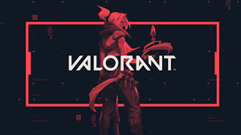

A video game is an electronic game that involves interaction between a user interface and a display device, such as a television or computer screen. Players typically control an on-screen character or object in a virtual world, completing challenges or tasks while progressing through levels or stages. Video games can be played on a variety of platforms, including consoles, computers, and mobile devices. They often feature elements such as competition, exploration, and storytelling, and can be designed for single or multiple players.
Valorant is a team-based first-person shooter video game developed and published by Riot Games. The game was released in June 2020 and has gained a large following since then. In Valorant, players assume the roles of agents with unique abilities and engage in fast-paced, tactical combat with each other. The game has a variety of modes, including standard matches and custom games, and is played online with other players. The objective of the game is to either attack or defend specific sites on the map, depending on which team a player is on. The game is free-to-play and is available on PC.
this the link to download valorant
https://playvalorant.com/ar-ae/Minecraft is a popular sandbox video game developed and published by Mojang Studios. It was first released in 2011 and has since become one of the best-selling video games of all time. In Minecraft, players explore a blocky 3D world and gather resources to craft tools, build structures, and create various other items. The game has no set goals, allowing players to create their own objectives and play styles. It also features a survival mode, where players must fend off monsters and manage hunger and health levels. Minecraft can be played in singleplayer or multiplayer mode, and is available on a variety of platforms, including PC, consoles, and mobile devices.

this the link to download:
https://www.minecraft.net/fr-frbye <3